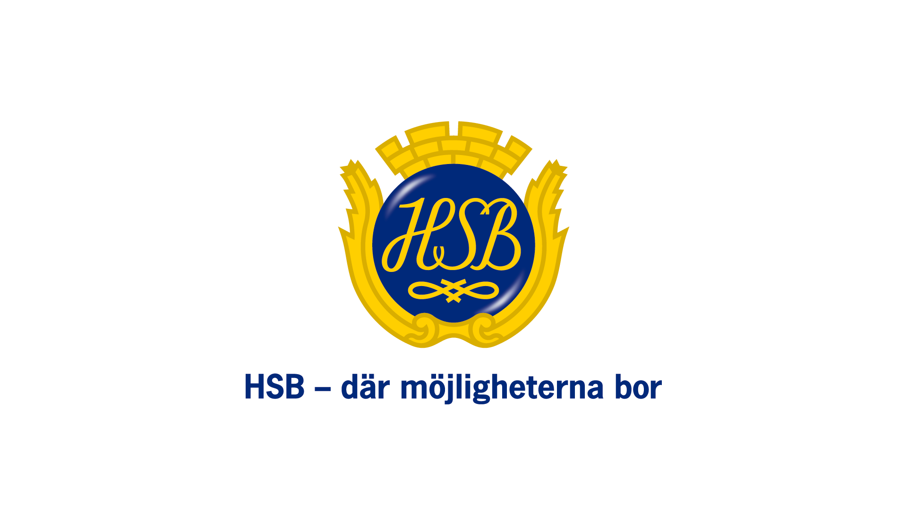
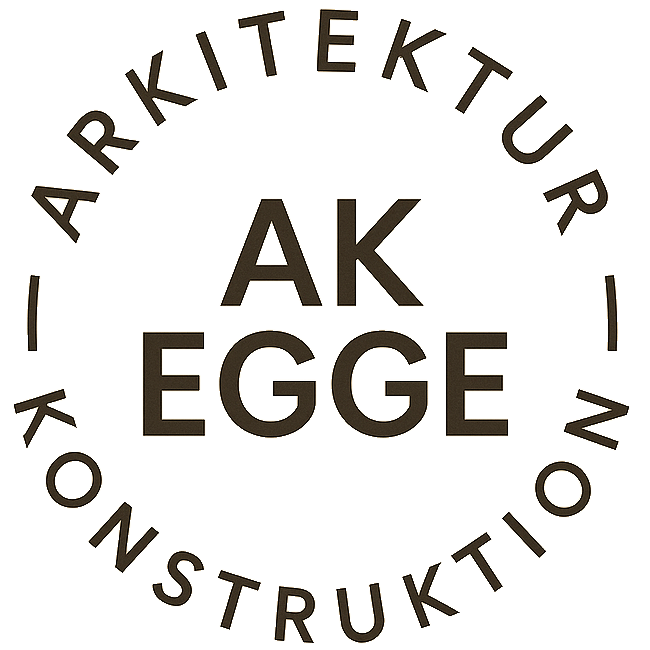
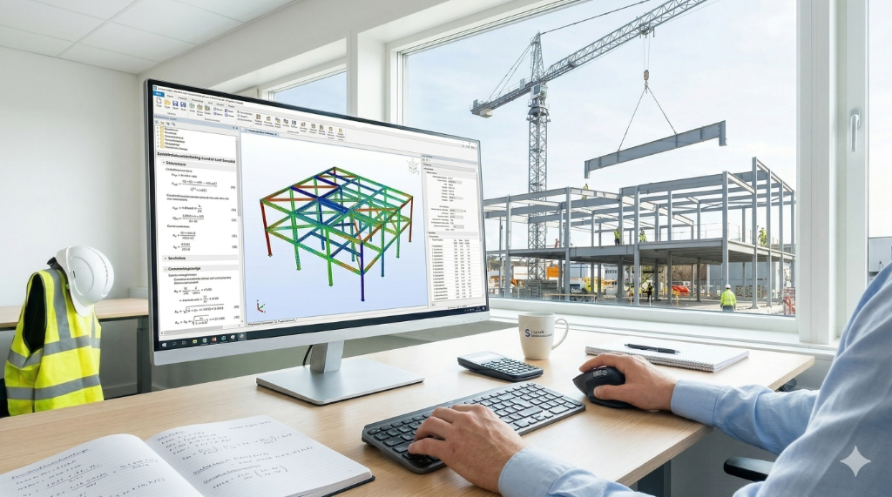

Säkerhet i fokus
Vi uppfyller gällande säkerhetskrav, ISO-standarder och Boverkets byggregler.
Säkra stommar för
framtidens samhällen
Professionella konstruktionsritningar och avancerade hållfasthetsberäkningar för komplexa objekt. Vi kombinerar gedigen ingenjörskonst med innovativa lösningar för stål, betong och trä.
KONTAKTA OSS"Global Construction har varit en avgörande partner i flera av våra mest komplexa projekt. Deras tekniska kompetens och förmåga att leverera i tid ger oss full trygghet."
Från initial analys till färdiga produktionshandlingar.
Global Construction erbjuder expertis inom strukturell byggkonstruktion med en kompromisslös inställning till kvalitet och precision. Oavsett om det handlar om nybyggnation av storskaliga flerbostadshus eller industriella anläggningar.
Vi tar ansvar genom hela processen – från första ritning till komplicerade grundläggningar. Våra certifierade konstruktörer säkerställer att varje projekt uppfyller högsta säkerhetskrav och optimerar projektets ekonomi.
Hållbara lösningar
Genom materialförståelse optimerar vi ekonomi och minskar CO2-avtryck.
Precision & kvalitet
Djupgående analyser och beräkningar säkerställer integritet och hållbarhet.
Några av våra samarbetspartners
Vi bygger säkra och optimerade lösningar tillsammans med branschens ledande aktörer.




Våra Kärntjänster
Nyproduktion & Renovering
Heltäckande projektering för alla typer av byggnader. Vi tar totalansvar från ritbordet fram till färdigställande och levererar hållbara konstruktioner för nybyggnad och komplexa lokalanpassningar.
LÄS MERKonstruktionsberäkning
Avancerade numeriska beräkningar och datasimuleringar för bärande balkar, pelare och fundament. Vi maximerar er statiska stabilitet med hänsyn till både ekonomi och miljöpåverkan.
LÄS MERKonstruktions- & tillverkningsritningar
Kompletta, fackmannamässiga A- och K-ritningar vända direkt mot produktionen. Vi eliminerar tolkningsutrymme ute på bygget och minimerar risken för kostsamma korrigeringar.
LÄS MERNågra av våra projekt

Multifunktionellt Bostadskomplex
Totalentreprenad med fullskaliga stål- och betongberäkningar för ett 8-våningshus i centrala Stockholm. Projektet krävde avancerad dimensionering av bärande stommar i stål och platsgjuten betong för att möta strikt reglerade seismiska och vindsbaserade belastningskrav.

Certifierat Civilförsvar
Uppställning av fackmannamässiga ritningar samt nyproduktion av certifierade skyddsrum (MCF-standard) för en storskalig industrifastighet. Komplett sakkunnigutlåtande och stabilitetsberäkningar för underjordisk fortifikation med full redundans.
Logistikanläggning, Göteborg
Dimensionering av extrema fundament och fribärande stålstommar för en 15 000 kvm modern logistikanläggning. Avancerad pålningsplan på komplicerade lerjordsförhållanden samt komplexa avväxlingar för lastbryggor.

Industrihub Syd, Malmö
Projektledning och konstruktionsansvar för en modulär industrihall optimerad för tunga laster. Innovativa lösningar för spännvidd och bärighet i prefabricerade takelement.

Innovationshuset, Uppsala
Hållbarhetsfokuserad konstruktion av en modern kontorsfastighet. Implementering av avancerade fasadsystem och energioptimerade stommaterial enligt Miljöbyggnad Guld.
Vanliga frågor kring byggkonstruktion
Beroende på projektets omfattning och komplexitet kan vi normalt sett få fram fackmannamässiga A- och K-ritningar inom 2 till 4 veckor från startmöte.
Ja, absolut. Vi arbetar ofta med äldre och kulturmärkta fastigheter och gör utredningar gällande nya bärande balksystem och avväxlingar vid större renoveringar.
Våra konstruktörer är specialister på både stål, platsgjuten och prefabricerad betong samt trä (inklusive avancerade limträ-konstruktioner).
Vid behov samarbetar vi rullande med oberoende geotekniker, vilket innebär att vi kan erbjuda exakta pålningsplaner och grundläggningskalkyler utifrån lokala markförhållanden.
Vi integrerar always strategiska miljöval genom hela projekteringsfasen, optimerar stål- och betongåtgång för att minimera CO2-avtrycket och uppfyller alltid ISO-kraven för hållbart byggande.
Självklart. Vi har behöriga kontrollansvariga som erbjuder oberoende övervakning genom hela entreprenaden för att säkerställa att branschkraven efterlevs punktligt.
Din tekniska partner för säkra konstruktionslösningar
Kontakta oss direkt – vi återkommer inom 24 timmar.
KOM I KONTAKT